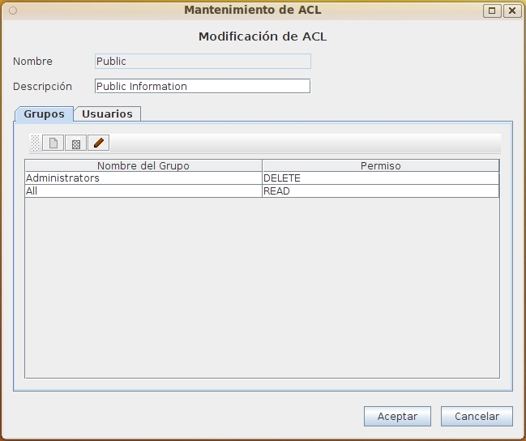

Mantenimiento ACL
Al seleccionar en el formulario de Lista ACL las opciones de Alta, Baja, Modificación o Copia de ACL aparecerá este formulario con diversos campos activados o desactivados.
Este formulario contiene la información:
- Nombre del ACL: Identificador del ACL cuyo valor no puede repetirse ni cambiar una vez asignado. Puede tener una longitud máxima de 32 caracteres. (Ej. "Top_Secret_Docs")
- Descripción del ACL: Descripción del ACL que permita interpretar y recordar el sentido de la política de seguridad. Puede tener una longitud máxima de 128 caracteres. (Ej.: "Documentos reservados para la dirección general")
- Lista de permisos asociados a grupos: La solapa de grupos contiene una lista de los permisos asociados a cada grupo. Se puede añadir, borrar o modificar los permisos asociados a un grupo por medio de los botones correspondientes.
- Lista de permisos asociados a usuarios: La solapa de usuarios contiene una lista de los permisos asociados a cada usuario. Se puede añadir, borrar o modificar los permisos asociados a un usuario por medio de los botones correspondientes.
Durante el alta solo se puede introducir nombre y descripción. Para agregar los permisos debe modificarse posteriormente.
Durante la modificación no podrá alterarse el nombre del ACL, ya que es el elemento que identifica unívocamente el mismo.
Durante la baja todos los elementos estarán desactivados. Solo se presentan para que pueda verificarse la información antes de su borrado.

Los permisos puede tener uno de los valores:
- READ: Permite leer el objeto
- CATALOG: Permite modificar los metadatos del elemento
- VERSION: Permite modificar los metadatos y el documento
- UPDATE: modificar los metadatos y el documento sin necesidad de crear versión
- DELETE: Permite borrar el elemento
Los valores son aditivos, de forma que cada uno contiene al anterior.
Si un usuario o grupo no aparece en un ACL, no tendrá ningún tipo de acceso al elemento; ni siquiera lo recuperará en una consulta.
Si un usuario aparece explícitamente con un permiso, pero pertenece a uno o más grupos a los que se ha asignado un permiso diferente, prevalece el permiso mayor.
Ver: Lista ACL, Lista de Grupos y Lista de Usuarios
Índice Ayuda OpenProdoc